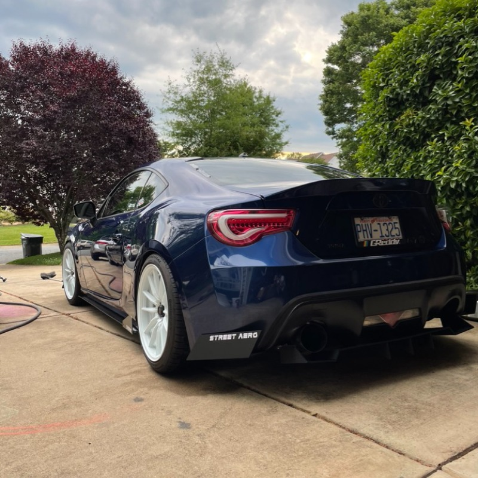
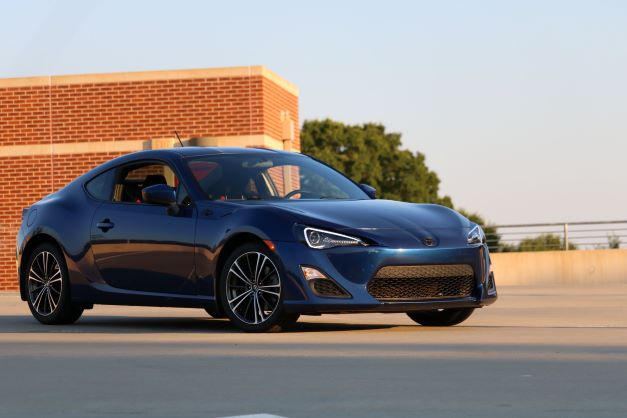
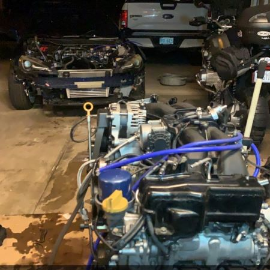
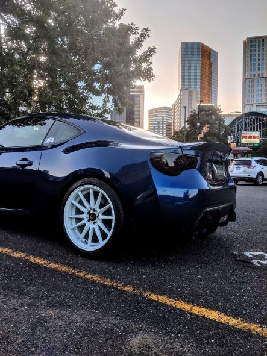

Home
Welcome! My passion for cars has been with me since I was a kid, and now I have spent plenty of time and money on it but still love it every day!

About Me
My passion for cars started early, it did not start with modify cars. It started by just fixing them, which is defiently not as fun but I found joy in working on them, When I was finally of age to drive I was luckly given a car, but spent the next year saving up to buy a car that I wanted. I ended up purchasing a 2004 BMW E46, which was a terrible idea, the car was a lemon and barely made it a year before I had to buy another one. Fortunately this led me to the FRS, which I bought in 2018 and have loved ever since!


Best Times
So its hard to tell but I would say right now I am in and approaching the best time with my car. Last year I start my journey of turbo charging my first car, it went pretty well and the car was operational for acouple months. I ended up having a little too much fun with it, sprung an oil leak under load and starved the motor. Most of the times thats a sign of some of the worst times, but I did the opposite. I pulled the motor and have spent the past several months rebuilding it, I am even more connected to the car than I was before and the future is fast and fun from here.

How?
There is nothing special about what I do, anybody can do it. Sometimes it is hard to find the time to work on the car, but its not going anywhere so there is no rush. Things take time to happen so no matter what is being worked on, anything that is worth working on should not be rushed it should be done right.

Why?
For a lot of people working on cars seems pretty useless, they are vehicles and are built to take you from A to B, so why waste all this time and money on something like that? It is something I enjoy, it is as simple as that. Driving, working on, and being around other cool cars brings a lot of joy to my life and thats all you can ask for in life.
_Original.jpg)
